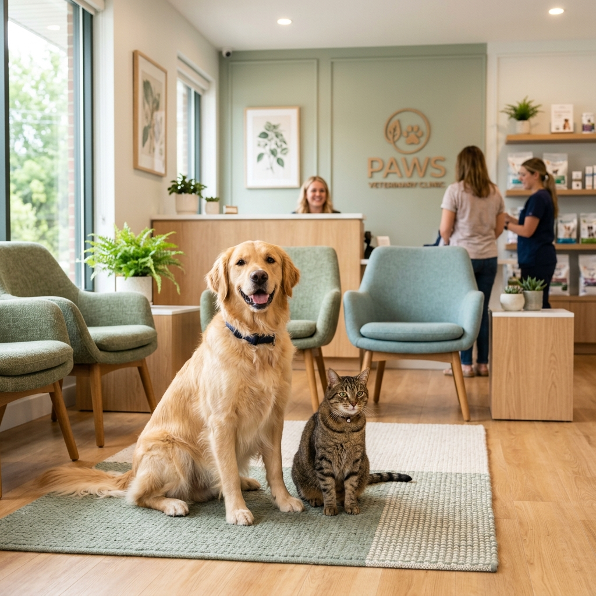
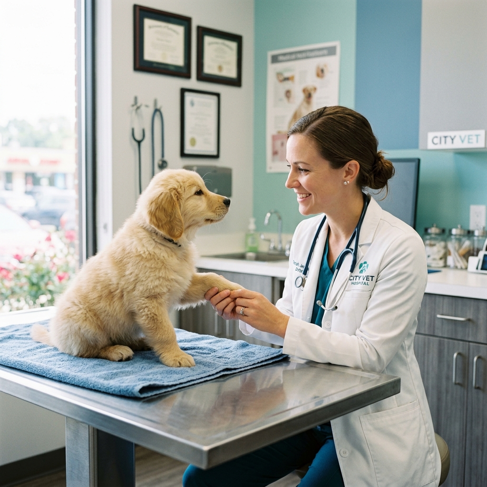
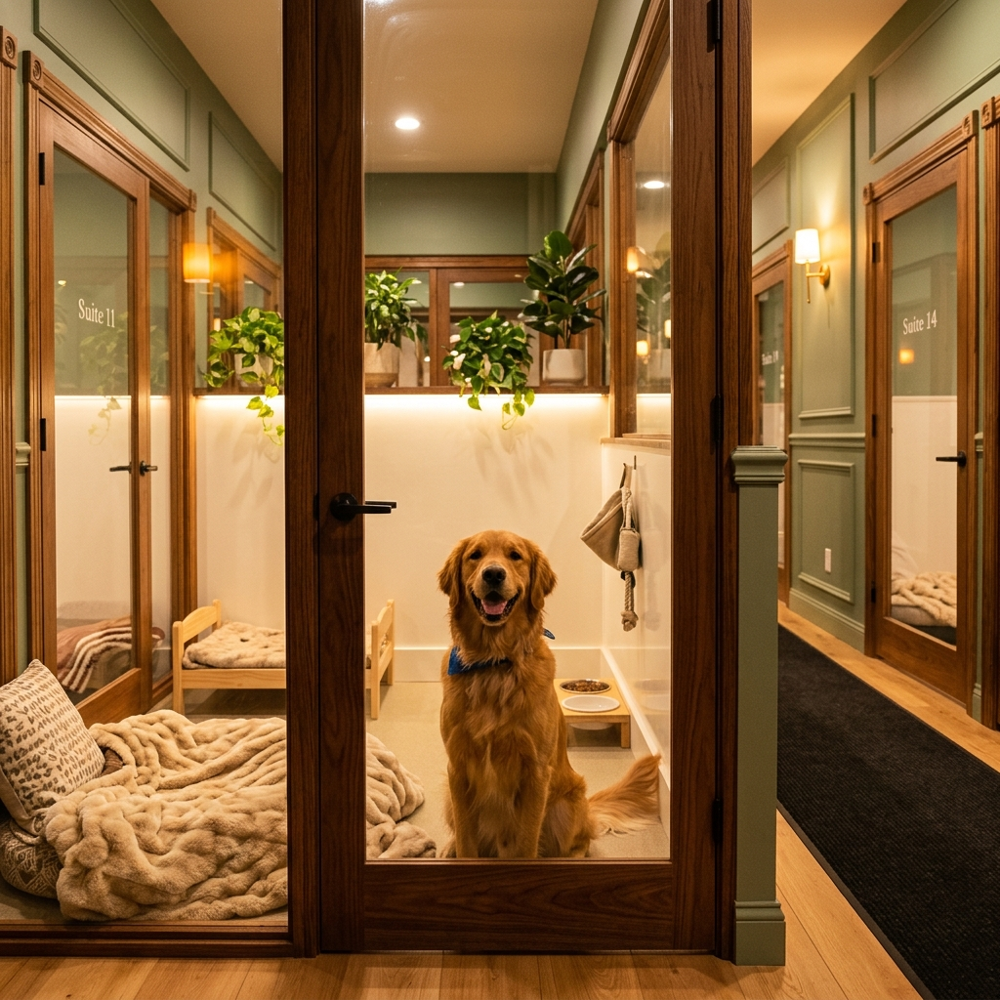

Full-service companion animal hospital in Frederick, MD — trusted by families for over 25 years.

At Frederick Veterinary Center, we strive to offer not only sound advice but also optimal veterinary care — allowing you the enjoyment of your companion for a maximum number of years.
Our job is not only to treat your pet when they aren't feeling well, but also to help you learn how to keep your best friend happy and healthy.
From preventive wellness to advanced surgery — we provide a full spectrum of care for your beloved companions.
In-house laboratory with serum chemistry, hematology, cytology, urinalysis, and parasite testing.
State-of-the-art surgical suite for soft tissue and orthopedic procedures with full anesthetic monitoring.
Teeth cleaning, polishing, X-rays, tooth extractions, and minor oral surgery for optimal oral health.
On-site X-ray equipment and ECG services plus specialist cardiology consultations.
Complete inventory of pharmaceuticals, vitamins, flea & tick control, and Hill's Prescription diets.
Class IV cold laser photobiomodulation therapy — reduces inflammation, minimizes pain and speeds healing.
Annual physicals, vaccinations, heartworm testing, flea control programs, and dietary counseling.
Exams, vaccines, testing and official documentation for domestic pet travel.
Basic grooming packages including bathing, ear cleaning, and nail trimming.
30+ years of combined veterinary experience dedicated to your pet's health and happiness.
Graduate of Cairo University School of Veterinary Medicine (2008), with a Doctorate from Oklahoma State University (2010). Specializes in internal medicine, surgery, and geriatric medicine. Member of the AVMA, Maryland VMA, and D.C. Academy of Veterinary Medicine.
Tufts University School of Veterinary Medicine graduate, with surgical residency at UC Davis and specialty training at Cornell University. Author of numerous publications in veterinary journals presented at international surgical conferences.
Over 25 years practicing at Frederick Veterinary Center. D.V.M. from Ontario Veterinary College. Specialties include the human-animal bond, preventive medicine, and veterinary public health. AAHA member & 2014 Frederick County Recycling Award recipient.
Joined FVC in 2023, long-time Frederick City resident. Dog mom to rescued Doberman "Elton." Enjoys biking, hiking, kayaking and canoeing.
19 years of veterinary technician experience. Completing licensure at Northern Virginia Community College. Avid hiker and disc golfer with his Australian Shepherd, Lancelot.
Emily is enrolled in Penn Foster Vet Tech program and mom to Cheddar, a Pitbull-Basset hound mix. Aleah is an aspiring veterinarian with a passion for animal care and travel.
Vacation plans? Called out of town? Our knowledgeable, caring staff is here to make your pet's stay as comfortable as possible with personalized care routines and daily attention from our veterinary team.

"Dr. Flynn is a wonderful vet! Very knowledgeable and very gentle with the animals. He managed to win over my nervous cat!"
"Dr. Flynn is the most knowledgeable and caring vet we have ever had — and that's saying a lot as I moved 9 times in 2 years and have seen my share of vets!"
"I love this vet. We've had cats in the past of my dad's that went here. Now that I have my own kitten I bring her here. Great staff. Very friendly and willing to work with you."
"I have been going to Dr. John Flynn for all of my animals for well over 20 years. Dr. Flynn is amazing! He is patient, smart, kind and gentle."